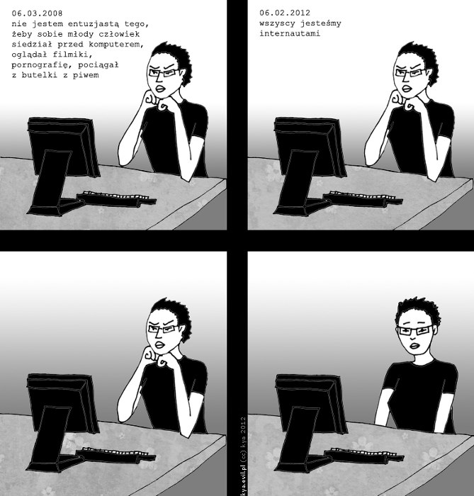
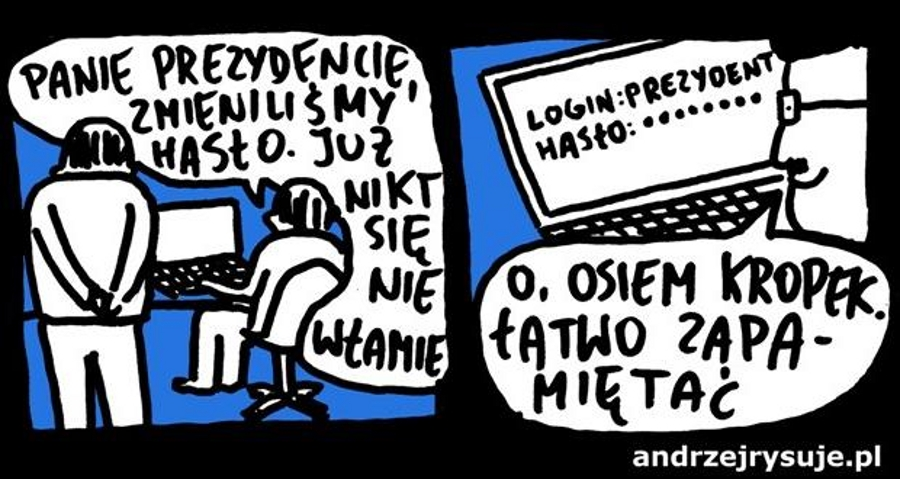
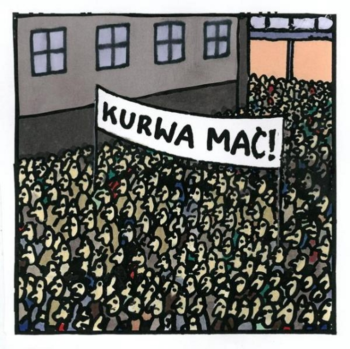
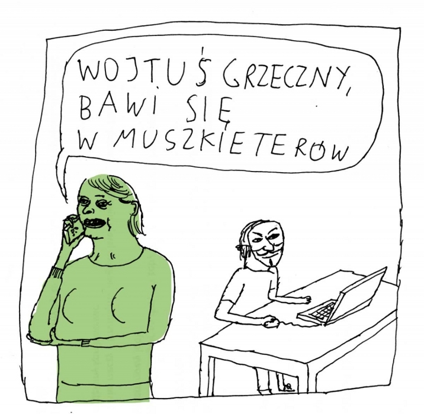
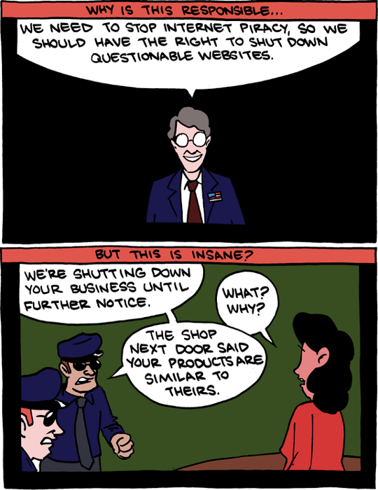
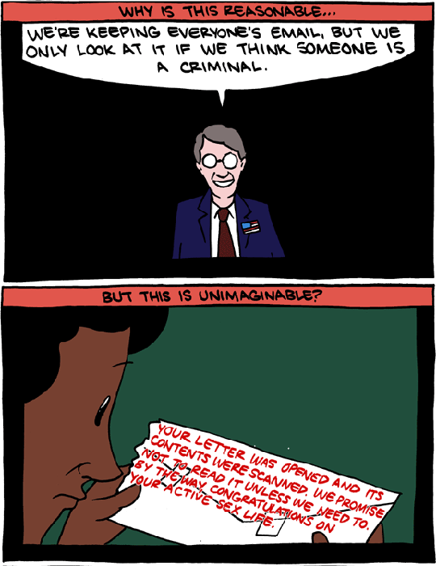
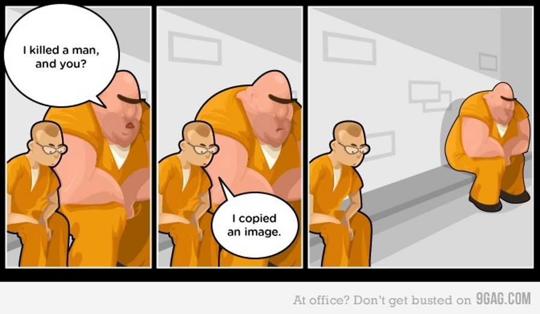

NetWtorek
haktywizm internetowy
(przechodzenie między slajdami
spacją, strzałkami lub PgUp / PgDn)
| z, ? | toggle help (this) |
| space, → | next slide |
| shift-space, ← | previous slide |
| d | toggle debug mode |
| ## <ret> | go to slide # |
| c, t | table of contents (vi) |
| f | toggle footer |
| r | reload slides |
| n | toggle notes |
| p | run preshow |
(przechodzenie między slajdami
spacją, strzałkami lub PgUp / PgDn)
 co ja pacze
 Hasło
 Kurwa mać!
 Wojtuś grzeczny…

 SMBC
 SMBC
 F**k you SOPA